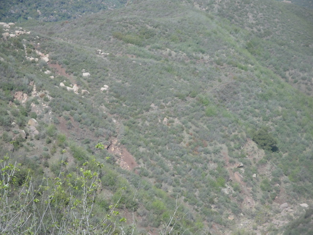
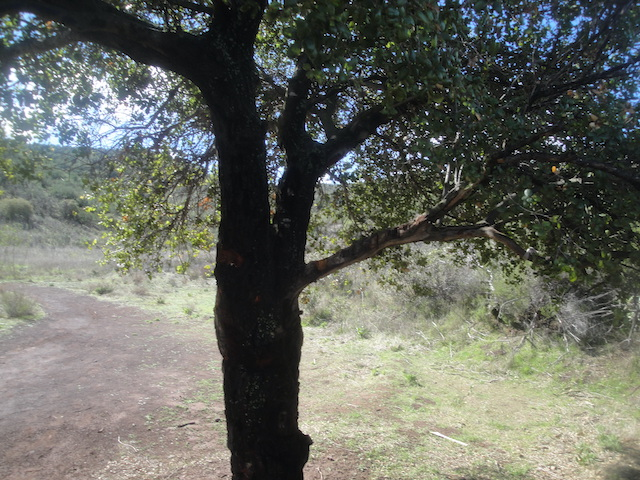
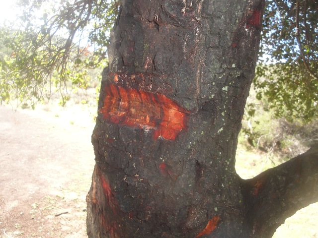
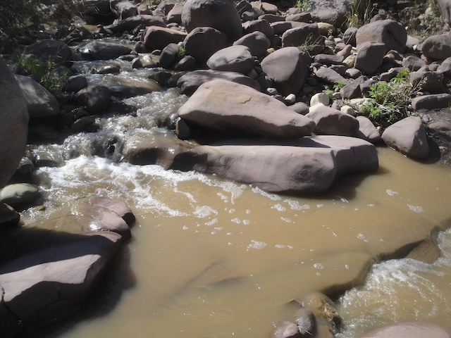
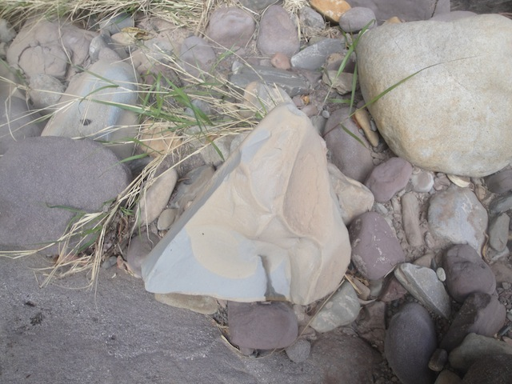
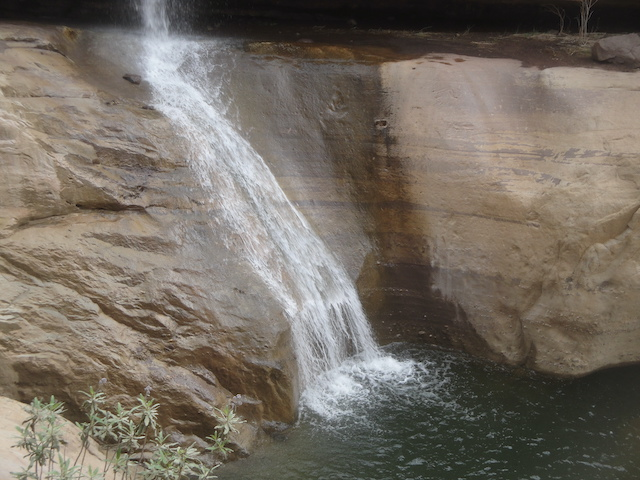
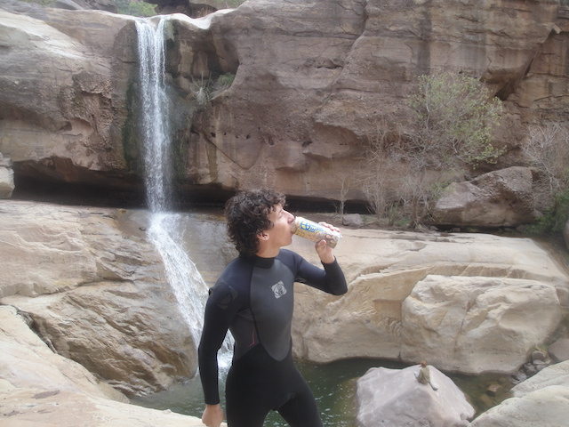
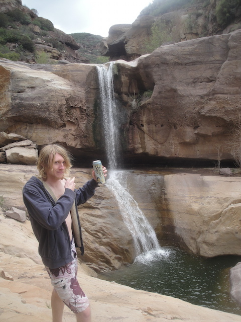
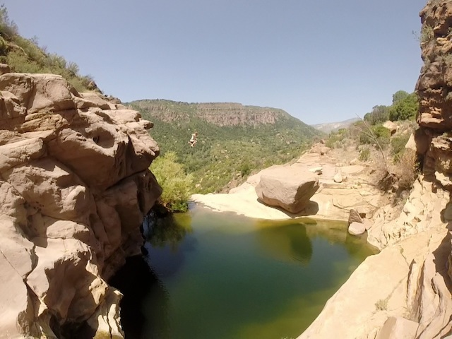
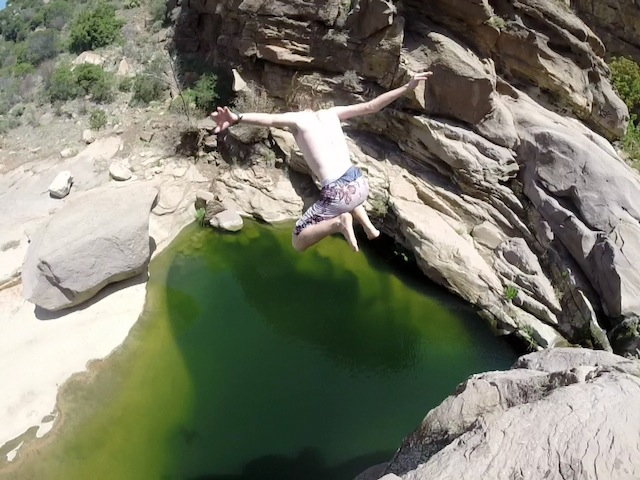

All right. So I this is our official update for all our Tar Creek Falls visits of 2014 in our official Tar Creek Update. Sadly, once again, the season had to be cut short due to the f*cking lack of rain (Stupid Climate Change and even stupider dipsh*ts who refuse to believe it ought to be smacked before the sea level rises even more). But in good news, the season actually ended up lasting as long as last year, so at least it didn't get shorter, which is amazing considering the drought California is suffering. And sadly, our season was just not as long as I was originally planning on it being at the beginning of the year. Sadly, stupid sh*t got in the way and prevented us from getting in as many visits as I wanted. But lets move onto the fun.

At least its still green.

Yay!!! We're half way down to the Cascade Ponds!!!

Hmm. Somethings up with the Half Way Tree. I suppose this is healthy for the tree.

On the downside, the water is mucky and kind of like chocolate milk. But on the upside, it is flowing BEAUTIFULLY!!!! =)

For some reason, this is the smoothest rock ever. Not sure what type of rock that is, but it must be valuable to Geologists.
Ooh!! Time to jump!!!
The pain of a bad landing on the 70 ftr isn't nearly as painful as the pain of the anxiety of jumping it after waiting all that time in the offseason. Just keep that in mind for you experienced jumpers who still get scared after an off-season of not jumping. =)
KEVIN AWAY!!!!
Love this freaky shot where it looks like Cody is jumping the 70 ftr horizontally and will belly flop.
Urge to jump rising.

Unfortunetly, we have some bad news at Tar Creek. The big slide is not slideable anymore. F*CKING LAME!!!! But at least it was ruined thanks to erosion. So I'm far more forgiving when nature naturally kills my fun and not polluting dipsh*ts. Still bummed about this though. =(

All this badass cliff jumping is proudly brought to you by Peace Tea.

Thanks to the work of advertisers, you'd probably assume Tar Creek to be a Red Bull kind of place (Love their sponserships, even if their drink is just meh), NOPE!!!! This is a Peace Tea kind of place. =)
Well, our next visit came in May. We weren't sure if the 70 ftr was gonna be jumpable today. Looking at it, the water is deep enough, but the water is too stagnant (It HURTS when its stagnant). So unless someone will jump in or swim to break up the water, we won't be able to jump today. =(

Well at least the 50 ftr is jumpable year round.

Considering how much trash I saw today (YOU LITTERERS SUCK!!!!!) and how many people showed up after we left, I might just come in the summer to do a trash clean up. Hey, I'd get some jumps on the 50 ftr in.
When we were about to leave, the Rapellers were rapelling down the 70 ftr, or at least from the top section to the lower section, which is about 40 ft. They talked to us about Rapelling and we told them about how we're cliff jumpers and compared the two (As someone who's done both, I much prefer cliff jumping. Its a swift smooth rush of adrenaline while rapelling while fun, just seemed too much stop start stop start. But according to the Rapellers, that's what it feels like during everyones first time). Anyways, they wanted to see us jump, but we explained that the water was too stagnant, plus their stuff was in the way. Wanting to see us jump and put on a show for them, they moved all their stuff out of the way, and one of the guys jumped the lower half and started swimming to break up the water, and just like that, we jumped for them. And then more people came, who recognized us from Youtube thanks to our video on jumping the 70 ftr. So they broke the water for us, and we jumped it again for them.
Unfortunetly, while this was a great (but short) season for Tar Creek, I have to talk about something serious here. I may be very opininated about several political issues, but I try to keep that sort of stuff away from Incrediblecoasters. However, this is a direct threat to Tar Creek, so I have to talk about it. The Texas Oil Company, Seneca Resources Corporation, wants to dramatically increase the fracking going on at Tar Creek. Great, just f*cking great. Now I not only have to worry about littering from drunken assholes ruining Tar Creek, but I have to worry about fracking from greedy oil companies as well. There has been a petition going around to stop the fracking from happening at Tar Creek and I'm urging you all to sign the petition and let the Forest Service know about all the damage that it will cause to Tar Creek and the condors in the Sespe Condor Sanctuary.
If that first video didn't show you all the things wrong with fracking, perhaps this video about flammible water from excessive methane will.